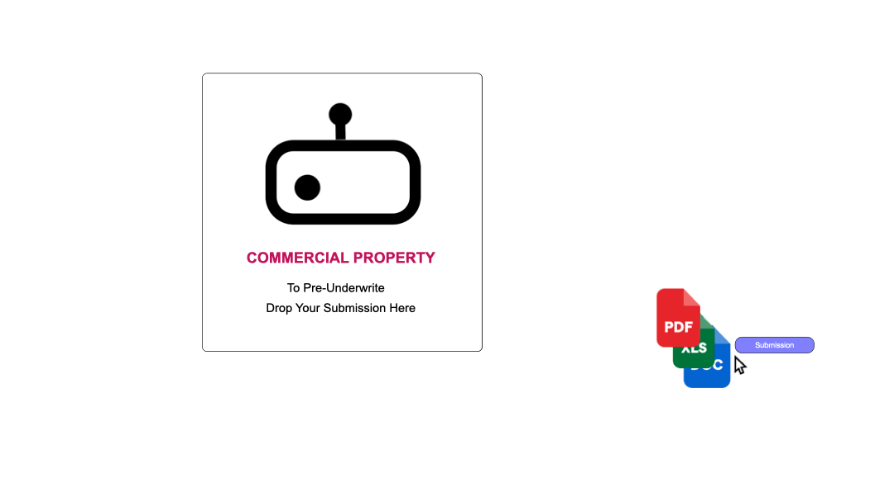

Drop the Submisssion in the Underwriting Box

Get Started: Basic Underwriting, Completely Free
We understand how sensitive your underwriting guidelines are, so rest assured they stay completely isolated. We’ll use them internally—solely to fine‑tune and enhance our underwriting engine—but they’ll never be shared, combined with other data, or exposed to any third party. In fact, your files live in their own secure storage and are never mixed or co‑stored with anyone else’s records.
Get Startednsur.ai It is the easiest way to get your underwriting AI automated.
Just drop your underwriting guide into the box. We’ll take care of the rest.
Simply drag‑and‑drop your underwriting guidelines into NSUR.ai. We’ll run a lightning‑fast audit to make sure we’ve got every detail right.
Review our brief summary, click “Approve,” and you’re all set—no extra configuration needed.
Send new applications either by dropping them here in the app or emailing them to your dedicated NSUR.ai inbox. We’ll instantly pre‑underwrite each file and deliver the full report data straight to your dashboard.
Click here to start nsur.ai's guided intake
Get Startednsur.ai learns your underwriting guidelines with remarkable precision. It seamlessly connects to your management.systems and claims platforms, helping you make smarter decisions—whether that’s clearing a risk or examining portfolio aggregates in a tailored view. And if you’ve got third‑party data sources, it can tap into those as well for even richer insights.
Ingests your underwriting guidelines and evaluates each new risk against them. It also performs an OFAC screening, calculates the property’s distance from the coast, and automatically incorporates any additional relevant information it can find online.
 TerritoryClass OKCoverage is OfferedLimits WrittenYour Decline CriteraYour Refer CriteraOFAC CheckDistance To CoastWeb Search
TerritoryClass OKCoverage is OfferedLimits WrittenYour Decline CriteraYour Refer CriteraOFAC CheckDistance To CoastWeb SearchReady to Go.
Connects directly to your management system: it can detect whether a risk already exists, verify that the total TIV for that area falls within your limits, and automatically push the application details into your system.
Risk ClearanceAgregate Limit CheckingSmart Underwriter AssignmentCustom QueriesRequires Integration
Automatically incorporate any third‑party data sources you’re already using—simply connect your account to pull in that information seamlessly.
Hazard Hub or EquiviantMVRsPermitting DataLoss Run SummaryCustom Data SourcesRequires Integration
The cost is minimal. In fact, a recent Underwriters Technology study of thousands of underwriters’ click‑and‑time habits found that they spend 25 % to 60 % of their workday merely preparing applications, entering data, and running ratings—before they ever make a decision. And if they’re not even writing the quote—just inputting information and generating the rate—that overhead climbs even higher.
Pricing: $0 LOB/Month*
Pricing: $50 LOB/Month*
Pricing: $50 LOB/Month*